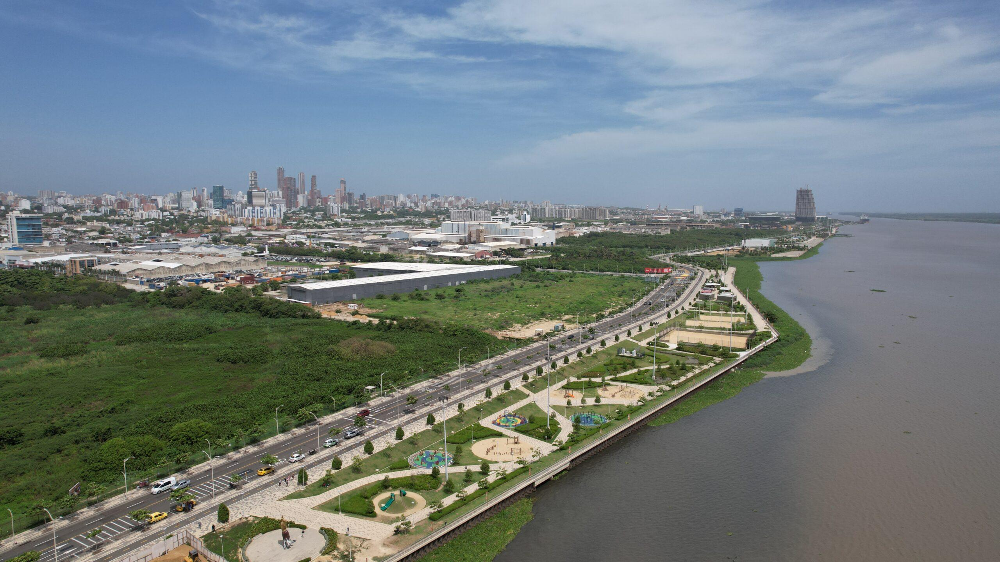

Misterios del Río Magdalena en Barranquilla
Lugares Misteriosos / Historia y relatos populares

Un río lleno de historias
El río Magdalena ha sido uno de los grandes protagonistas de la historia de Barranquilla. Durante siglos, sus aguas sirvieron como vía de comunicación, comercio y transporte entre diferentes regiones de Colombia. La ciudad creció alrededor de sus caños y de la actividad portuaria, convirtiendo al río en parte fundamental de su identidad. Sin embargo, detrás de su importancia histórica también existe un paisaje lleno de relatos, recuerdos y misterios que todavía despiertan la imaginación de sus habitantes.
Uno de los lugares más sorprendentes es Bocas de Ceniza, donde las aguas del río Magdalena se encuentran con el mar Caribe. Este escenario ha sido testigo de cambios naturales, transformaciones del paisaje y grandes obras de ingeniería. La fuerza de las corrientes, los sedimentos y el encuentro de dos masas de agua han alimentado durante generaciones la fascinación por este lugar, considerado una de las entradas más emblemáticas de Barranquilla.
El pasado del río también está relacionado con los antiguos barcos de vapor que transportaban pasajeros y mercancías. Durante décadas, estas embarcaciones recorrieron sus aguas, conectando pueblos y ciudades. Historias de largas travesías, embarcaciones desaparecidas de la vida cotidiana y recuerdos de navegantes forman parte de la memoria fluvial. Uno de aquellos barcos, el vapor David Arango, pasó a la historia después de sufrir un incendio en 1961.
Al caer la noche, el río adquiere una apariencia diferente. Sus extensas orillas, los antiguos caños y las zonas cercanas a la desembocadura crean un ambiente que invita a imaginar historias sobre embarcaciones, viajeros y acontecimientos del pasado. En diferentes comunidades ribereñas sobreviven relatos transmitidos de generación en generación, donde el agua aparece como escenario de encuentros inexplicables, advertencias y sucesos difíciles de olvidar. Estos relatos hacen parte de la tradición oral y no deben confundirse con acontecimientos históricamente comprobados.
Hoy, el río Magdalena continúa siendo un símbolo de la memoria y la identidad de Barranquilla. Lugares como el Gran Malecón, el antiguo Muelle de la Intendencia Fluvial y Bocas de Ceniza permiten acercarse a su historia. Más allá de su importancia económica y ambiental, el río conserva preguntas sobre su pasado, sus transformaciones y las historias de quienes han vivido junto a sus aguas.
Lugares para descubrir sus misterios
Bocas de Ceniza: el encuentro entre el río Magdalena y el mar Caribe, escenario de transformaciones naturales y grandes obras de ingeniería.
Gran Malecón: un espacio para contemplar el río y conocer su relación con el desarrollo de la ciudad.
Muelle de la Intendencia Fluvial: una construcción histórica que recuerda el pasado portuario y comercial de Barranquilla.
Caño Los Tramposos: un paisaje fluvial relacionado con la antigua red de caños y la historia portuaria de la ciudad.
Fuentes y referencias
Museo Nacional de Colombia. Río Magdalena: Navegando por una nación. Historia, navegación y cultura del río.
Consultar fuenteUniversidad del Norte. Un río difícil. El Magdalena: historia ambiental, navegabilidad y desarrollo.
Consultar investigaciónVisit Barranquilla. Ruta Fluvial: memoria histórica, antiguos muelles y relación de la ciudad con el río.
Consultar ruta patrimonialCámara de Comercio de Barranquilla. Historia de Bocas de Ceniza y su importancia para la ciudad.
Consultar fuente histórica